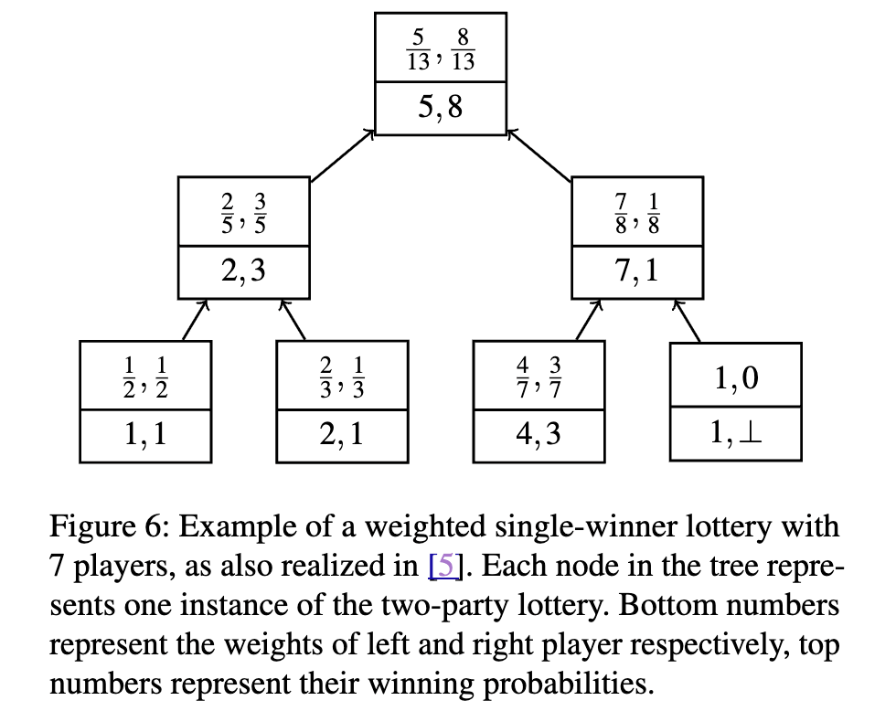

Quentin Kniep, Roger Wattenhofer
Preprint
We propose TYCHE, a family of protocols for performing practically (as well as asymptotically) efficient multiparty lotteries, resistant against aborts and majority coalitions. Our protocols are based on a commit-and-reveal approach, requiring only a collision-resistant hash function.
All our protocols use a blockchain as a public bulletin board and for buy-in collection and payout settlement. Importantly though, they do not rely on it or any other third party for providing randomness. Also, participants are not required to post any collateral beyond their buy-in. Any honest participant can eventually settle the lottery, and dishonest behavior never reduces the winning probability of any honest participant.
Further, we adapt all three protocols into anonymous lotteries, where (under certain conditions) the winner is unlinkable to any particular participant. We show that our protocols are secure, fair, and some preserve the participants' privacy.
Finally, we evaluate the performance of our protocols, particularly in terms of transaction fees, by implementing them on the Sui blockchain. There we see that per user transaction fees are reasonably low and our protocols could potentially support millions of participants.

@article{kniep2024Tyche:Collateral-free,
author = {Q. Kniep and Roger Wattenhofer},
title = {Tyche: Collateral-Free Coalition-Resistant Multiparty Lotteries with arbitrary payouts},
year = {2024}
}